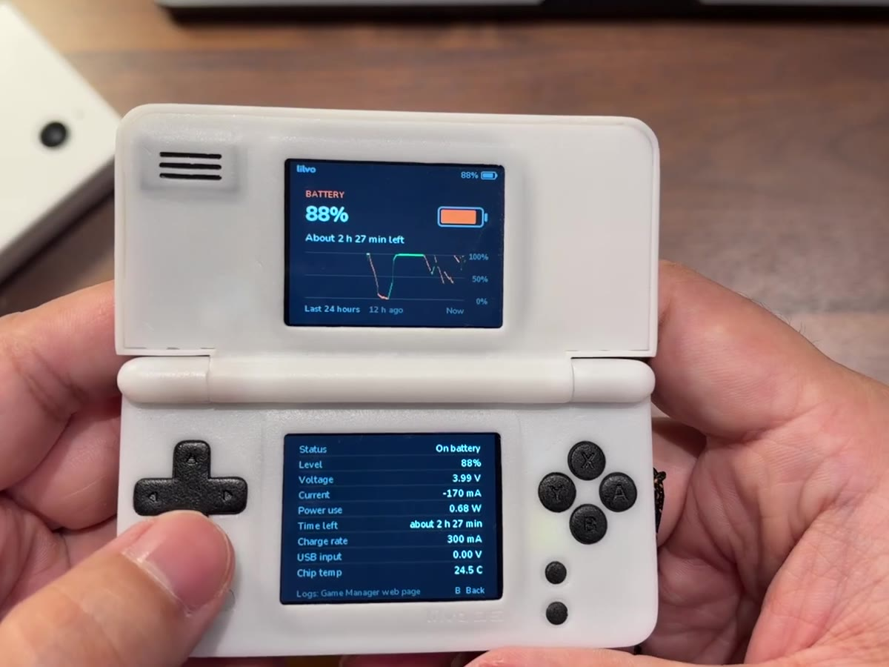
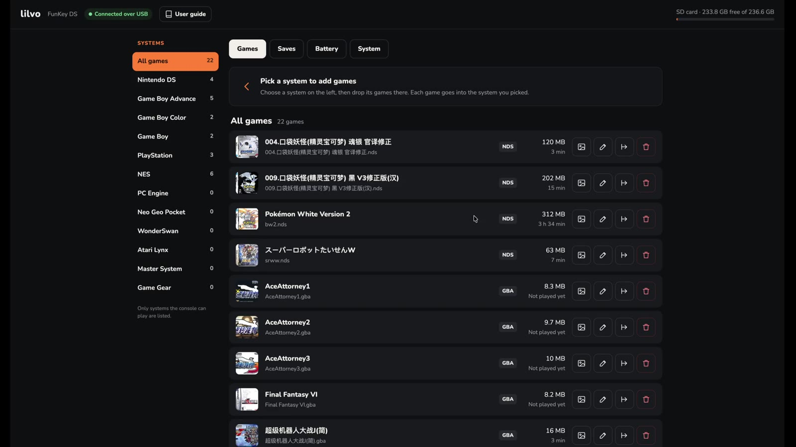

lilvo 1.5 to 1.6: a battery you can trust
Most of the last two weeks went into things you don't see in a video: how full the battery really is, how charging behaves, and how updates get installed. None of it is exciting, but all of it matters if this is going to be a device people use every day.

The battery was lying
I ran the console from full to empty while playing DS games and logged everything every 30 seconds. It lasted 2 hours 53 minutes, at about 0.7 W on average. Adding up the current showed the battery, sold as 1000 mAh, actually holds about 590 mAh. The voltage curve was also much flatter than a textbook one, so the old readout showed 8% when about half was left.
- The percentage now uses the curve I measured, and 0% is where the console really runs out.
- It now learns the battery's real capacity by itself after one full charge or discharge, and keeps learning.
- Charging is shown properly: it fills up smoothly and reaches 100% when the charger is really done, instead of jumping.
- Charging while the console is off should now be counted too, using the power chip's own meter. Still checking that on the real device.
- The default charge current is gentler (about 0.6C) to go easy on small batteries.
The current prototype has a new 1200 mAh battery. Its full test is next. For production, the battery has to come from a maker with a real datasheet.
USB-C chargers
Some USB-C chargers wouldn't start charging while the console was on. The cause: the USB data line was leaking a little voltage back onto the power line, and those chargers wait until the line is completely off before they turn on. The system now disconnects USB data when nothing is plugged in, and I want the boards for production to fix it in hardware.
Smaller things
- No stutter when scrolling. Cover art is now shrunk once and saved, in the background, so browsing a big library is smooth the first time too.
- Progress bars for saving, loading and turning off now fill from left to right and actually finish.
- Shortcuts: Fn + left / right for brightness, Fn + up / down for volume, Fn + L for speaker / headphones, with a small bar on the top screen.
- Button test lights each button while you hold it.
Updates in one safe step
Once these are in people's hands, everyone will be on a different version. So from 1.6 on, an update is one complete package that brings any older version straight to the latest. You drop it on the System page of the web manager. Saves are carried over without being copied, and if the new version fails to reach the home screen twice in a row, the console goes back to the old one by itself on the next start.
